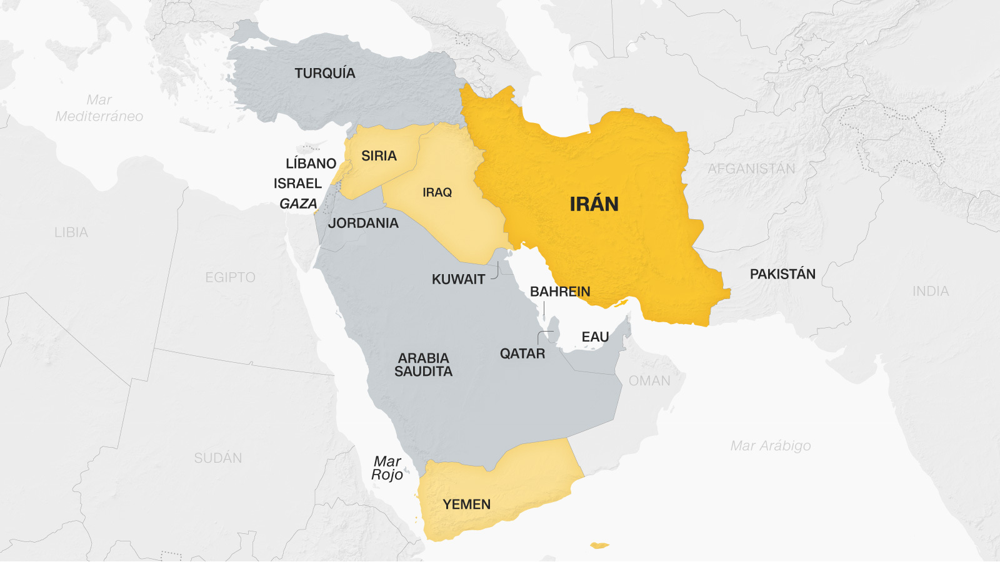
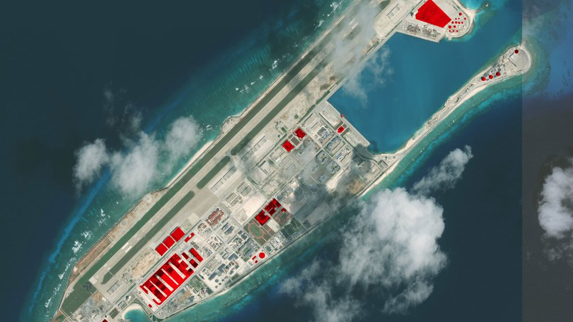
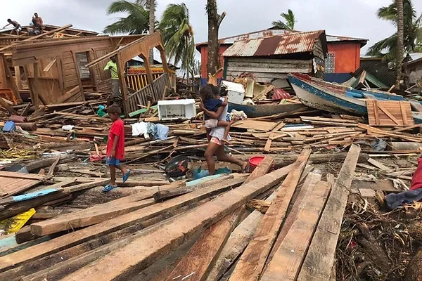
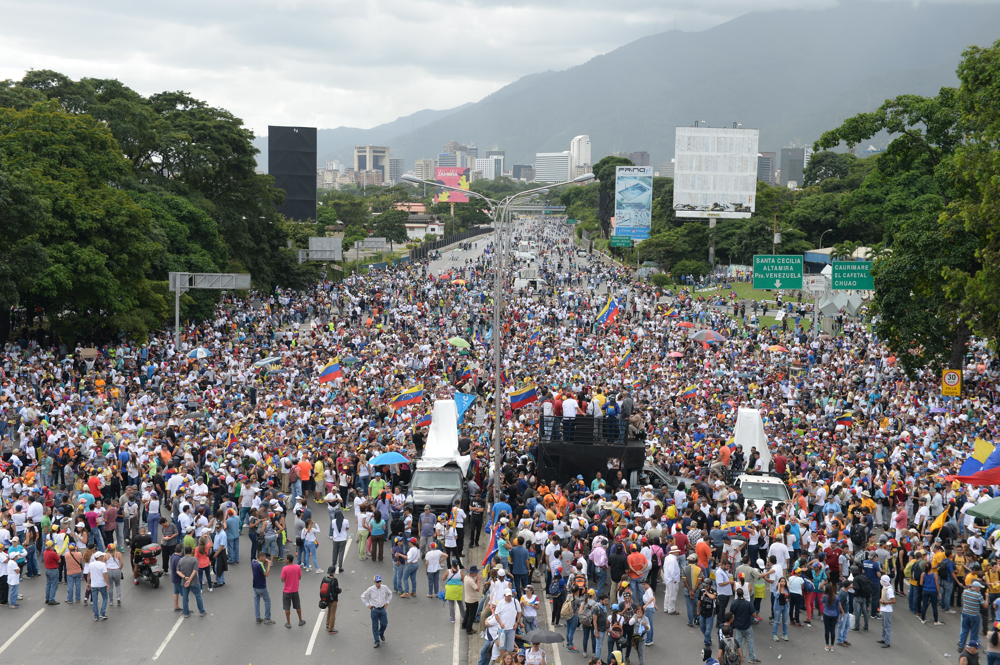

Conflicto en Medio Oriente
El conflicto en Medio Oriente, especialmente en países como Siria, Irak y Yemen, sigue siendo una de las crisis geopolíticas más complejas del mundo. La lucha por el control territorial, las intervenciones extranjeras y las tensiones sectarias han creado una situación volátil.
Tensiones en el Mar del Sur de China
El Mar del Sur de China es una zona de intensa disputa territorial entre China y varios países del sudeste asiático. La construcción de islas artificiales y la militarización de la región han aumentado las tensiones internacionales.
Cambio Climático y Seguridad Global
El cambio climático está teniendo un impacto significativo en la seguridad global. Eventos climáticos extremos, como huracanes, inundaciones y sequías, están desestabilizando regiones enteras y causando migraciones masivas. La competencia por recursos naturales cada vez más escasos está generando nuevos conflictos.
Crisis en Venezuela
La crisis política y económica en Venezuela ha llevado a una masiva migración de sus ciudadanos y a una serie de sanciones internacionales. La lucha por el poder entre el gobierno de Nicolás Maduro y la oposición ha causado una gran inestabilidad.
Ascenso de China como Potencia Global

China ha emergido como una superpotencia económica y militar. Su iniciativa de la Franja y la Ruta, así como su influencia en organizaciones internacionales, están remodelando el orden mundial.